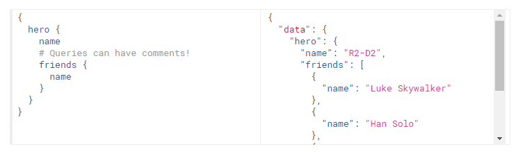
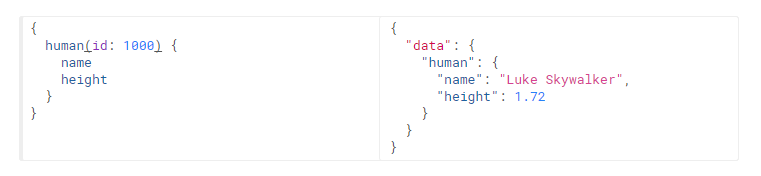
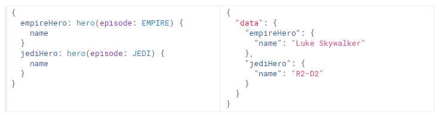
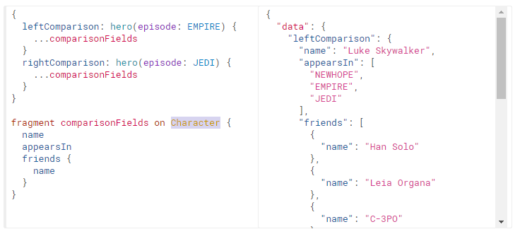
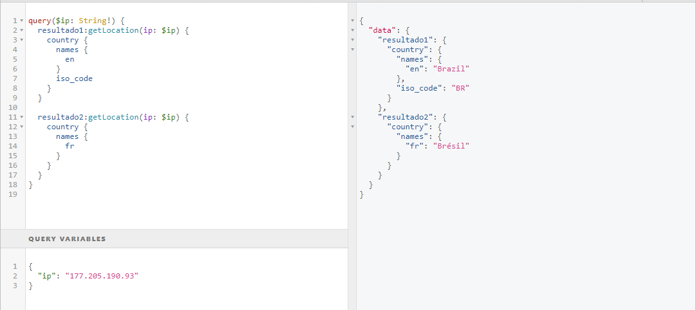
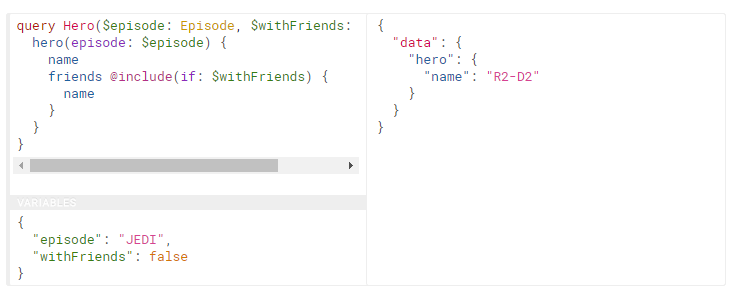
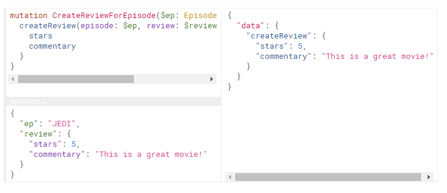
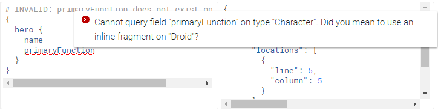

Quem sou eu?
- Ciência da computação pela Universidade de Guarulhos
- MBA Soluções corporativas Java - FIAP
- Trabalho na Forseti Tecnologia em Licitação
Não podemos falar de GraphQL sem falar de REST
Calma é só uma brincadeira
Rest
request (GET)
https://viacep.com.br/ws/01001000/json/
{
"cep": "01001-000",
"logradouro": "Praça da Sé",
"complemento": "lado ímpar",
"bairro": "Sé",
"localidade": "São Paulo",
"uf": "SP",
"unidade": "",
"ibge": "3550308",
"gia": "1004"
}
GraphQL
request (POST)
{
endereco(cep: "01001-000") {
logradouro
uf
}
}
{
"data": {
"endereco": {
"logradouro": "Praça da Sé",
"uf": "SP"
}
}
}
Introdução
De forma resumida"GraphQL é uma linguagem de consulta para sua API ..."http://graphql.org
1 endpoint
 https://cdn-images-1.medium.com/max/800/1*qpyJSVVPkd5c6ItMmivnYg.png
https://cdn-images-1.medium.com/max/800/1*qpyJSVVPkd5c6ItMmivnYg.png
Queries and Mutations
Fields
Arguments
Alias
Fragments
Variables
Directives
Mutations
Schemas and Types
$schema = new Schema([
'query' => $queryType,
'mutation' => $mutationType,
]);
$queryType = new ObjectType([
'name' => 'Query',
'fields' => [
'echo' => [
'type' => Type::string(),
'args' => [
'message' => ['type' => Type::string()],
],
'resolve' => function ($root, $args) {
return $root['prefix'] . $args['message'];
}
],
],
]);
$mutationType = new ObjectType([
'name' => 'Calc',
'fields' => [
'sum' => [
'type' => Type::int(),
'args' => [
'x' => ['type' => Type::int()],
'y' => ['type' => Type::int()],
],
'resolve' => function ($root, $args) {
return $args['x'] + $args['y'];
},
],
],
]);
Types
- Int
- Float
- String
- Boolean
- ID
- Object
- Enum
type modifiers
- List
- Non-Null
type Character {
name: String!
appearsIn: [Episode]!
}
resolvers
'resolve' => function ($root, $args) {
return $args['x'] + $args['y'];
},
Validation
Introspection
Muitas vezes é útil pedir um esquema GraphQL para obter informações sobre quais consultas ele suporta. O GraphQL nos permite fazer isso usando o sistema de introspecção!API documentada :)
Vamos brincar um pouco
https://github.com/APIs-guru/graphql-apisQuero ver PHP!!!
https://github.com/dsaouda/graphql-phpconf-2017client-side
http://graphql.org/code/#graphql-clientsFerramentas
- https://github.com/graphql/graphiql
- http://graphql.org/code/#tools
- chrome-extension://fkkiamalmpiidkljmicmjfbieiclmeij/chromeiql.html
Quem usa?
http://graphql.org/users/Referências
- http://graphql.org/
- http://graphql.org/learn/
- https://developer.github.com/v4/explorer/
- https://pt.slideshare.net/brunonm/do-rest-ao-graphql-com-php
- https://pt-br.eventials.com/locaweb/do-rest-ao-graphql-com-php-com-bruno-neves-menezes/
- https://labs.getninjas.com.br/tagged/graphql